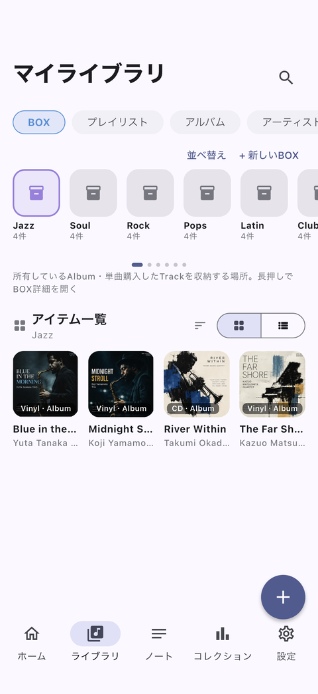
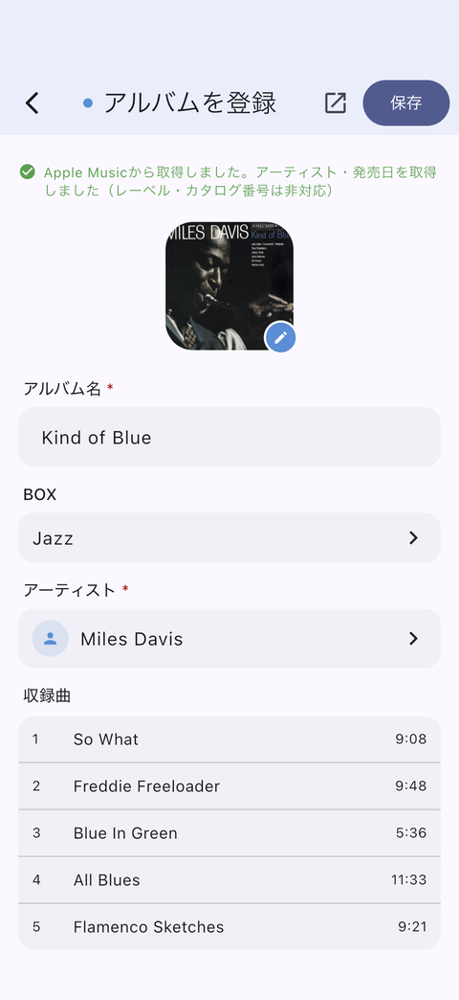
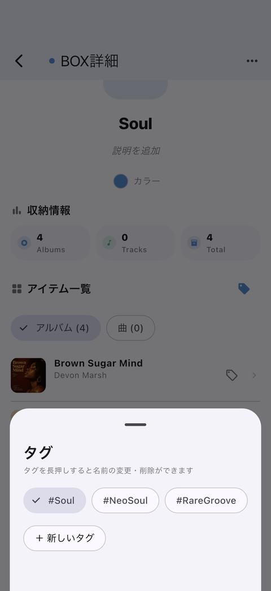
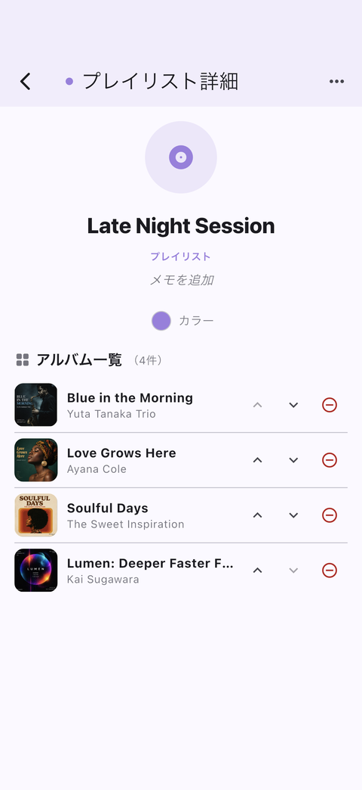
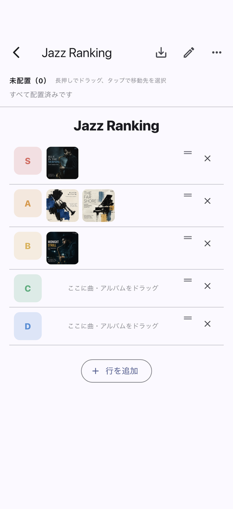
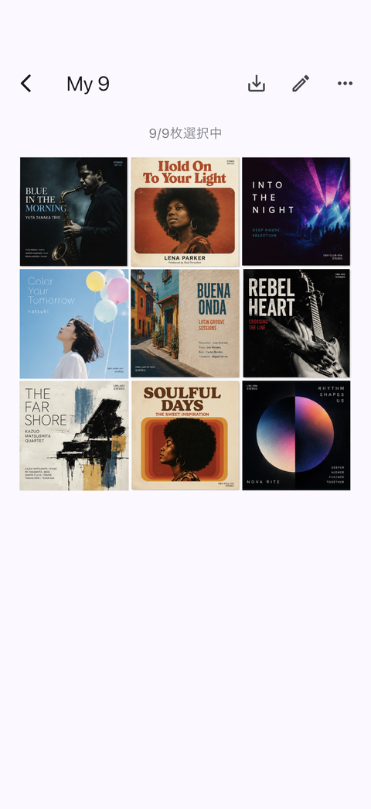

Guide
使い方
DigBoxの基本的な使い方は、「BOXを作る → 音源を登録する → BOXの中を整理する → 眺める」という流れです。それぞれのステップを順番に見ていきます。
01BOXを作る
最初に、自分の音楽を整理するためのBOXを作ります。
BOXは、実際のレコード箱や棚にあたる、音楽を整理するための収納単位です。

BOXには以下の2種類があります。
- Collection所有している音源を入れるBOX
- Other所有以外の用途に使えるBOX
BOXには自分で名前を付けることができ、色や並び順なども変更できます。
02音源を登録する
DigBoxでは、音源をAlbumまたはTrackとして登録します。
Album
レコード、CD、デジタルアルバムなど、アルバム単位の音源を登録できます。
ジャケット、アーティスト、発売日、収録曲などの情報と一緒に管理できます。
Track
アルバムとは別に、曲単位の音源もTrackとして登録できます。
例えば、デジタルで購入したシングルなど、アルバムとは別に管理したい音源をTrackとして登録できます。
登録方法
URLから登録（主な方法）
Apple Music・Spotify・DiscogsのURLを貼ると、タイトル・アーティスト・ジャケットを自動取得。YouTube動画URLにも対応。
検索して登録
Apple Musicを検索して、選ぶだけ。
手動で作成
情報の無いレコードも、自分で入力して登録できる。
URLからまとめて追加
複数のURLをCSV形式でまとめて渡すと、一括で登録が進みます。棚卸しや、まとめて記録したい時に。

03BOXの中を整理する
前のステップで登録したAlbumやTrackを、BOXの中で自分なりに整理できます。

Tags
BOXに入れたAlbumやTrackには、自由にタグを付けられます。
ジャンルのような固定された分類ではなく、気分、シチュエーション、掘った経緯など、自分なりの切り口でタグを作成できます。
タグで絞り込むことで、BOXの中のコレクションを違った切り口から見返せます。
04眺める
集めたコレクションは、作って終わりではなく、Playlist・Tier・Chart・My Boardで何度でも見せ直せます。

プレイリスト
複数のBOXをまたいで、Albumに登録された収録曲から必要な曲を選び、曲順を自分で決められます。アルバム用・曲用の2種類。

Chart
プレイリストの中身をランキング形式で表示。テキストとしてコピーしたり、画像として保存したりできます。

Tier
S/A/B/Cのようなランクでアルバムを分類し、画像として書き出せます。自分だけのランキングボードを作る感覚で。

My Board
お気に入りのアルバムを9〜24枚のグリッドに並べ、1枚の画像として保存できます。「My 9」投稿のような見せ方に。